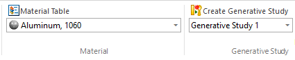
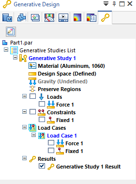
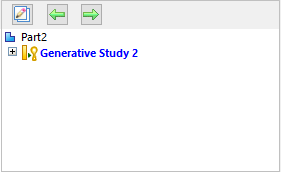
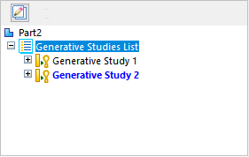
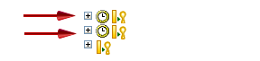

Creating a generative study
Creating a new generative study is part of the Generative Design workflow.
Initiating a generative study
Choose the Generative Design tab→Generative Study group→Create Generative Study command  to initiate a generative study to optimize mass for your model.
to initiate a generative study to optimize mass for your model.

You can complete the study definition using the commands in the Material group, the Geometry group, the Loads group, and the Constraints group on the ribbon.
Working with generative studies
A study is a container that organizes data. The study also is responsible for solving a generative design optimization, storing stress results, and producing a resulting mesh model. What you can do with the result is based on your Generative Design license type.
-
The study name and applied material are displayed on the Generative Design tab on the ribbon, as well as in the Generative Design docking pane in PathFinder.

You can change the study material and the study units. For more information, see Assign material to a generative study and Assign units in a generative study.
-
In the Generative Design pane, the active study is shown in blue text. You may want to assign each study a custom name using the Rename command on its shortcut menu. The same name is assigned to the generative study result.

-
You can use the Create Generative Study command to create multiple studies within the same document, which allow you to explore different structural optimization approaches on the same design body. If you have multiple studies to compare different generated mesh bodies based on different sets of inputs, you can use the Show Single/Multiple button to change how you list the studies in the Generative Design pane.
-
You can display one study at a time. To see the other studies, use the Show Next Study and Show Previous Study buttons.

-
You can list all studies in the Generative Design pane, and then expand and collapse individual studies as needed to see their associated data.

-
-
A study contains information about the parameters used to run the optimization and the results after the optimization is complete. For information about editing study inputs to generate different results, see Modify a generative study.
Note:A study that has out-of-date inputs is listed in the Generative Design pane with a clock symbol:
